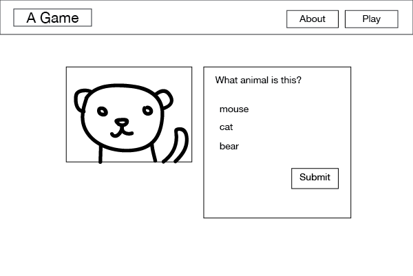
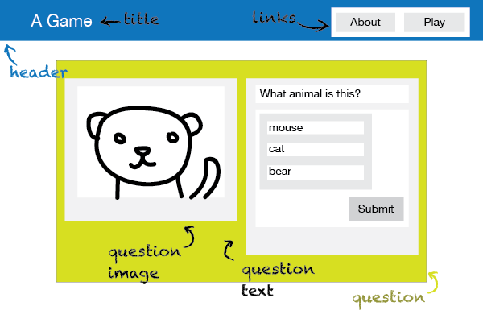

Piensa en CSS
Y gana años de vida con SASS
¿Qué vamos a ver?
Lo básico de lo básico: qué entendemos por CSS
Cómo pensar en CSS y enfrentarnos a una maquetación sin morir en el intento
Buenas prácticas para ser más felices
Qué es SASS (👀 Spoiler! Es CSS con esteroides)
¿Qué significa CSS?
🌊Cascade
💅Style
📋Sheet
¿Cascada? ¿Algoritmo?
<p class="better">This is a paragraph.</p>
<p class="better" id="winning">One selector to rule them all!</p>
¿Qué selector gana en importancia?
1. Importancia
3. Orden

Paso 1: Boceto
Paso 2: Piensa en bloques
Paso 3: empieza con un buen HTML

Paso 4: empieza a maquetar

Buenas prácticas para ser más felices
😃
(Y tener un código más sano, mantenible y escalable)
Organiza tu código por secciones
/*------------------------------------*/
/* SECTION */
/*------------------------------------*/
....
/* SUB-SECTION */
/*------------------------------------*/
....
Piensa bien los nombres de tus clases
Usar nombres de clase para describir el contenido es redundante porque el contenido se describe a sí mismo.
/* No es muy mantenible */
.blue {
color: blue;
}
/* Depende de su ubicación */
.header span {
color: blue;
}
/* Demasiado específico, no es muy reutilizable */
.header-color {
color: blue;
}
/* Buena abstracción y muy reutilizable */
.highlight-color {
color: blue;
}
Optimiza tus selectores
(Mejora su rendimiento)
body.home div.header ul { }
.primary-nav { }
El navegador lee los selectores de derecha a izquierda
Evita el uso de IDs
Mantén una especificidad baja
Los IDs no son reutilizables
Es correcto usar IDs en HTML y JS, aunque en CSS puede llegar a dar problemas
!important == ñapa
(El 99.9% de las veces)
Puede ser un síntoma de un problema mucho mayor en el código
¿Cómo prevernirlo? Manteniendo una especificidad baja
Ordena las propiedades por grupos
En función del posicionamiento, box model, colores, tipografías...
.selector {
/* Positioning */
position: absolute;
z-index: 10;
top: 0;
right: 0;
/* Display & Box Model */
display: inline-block;
overflow: hidden;
box-sizing: border-box;
width: 100px;
height: 100px;
padding: 10px;
border: 10px solid #333;
margin: 10px;
/* Color */
background: #000;
color: #fff
/* Text */
font-family: sans-serif;
font-size: 16px;
line-height: 1.4;
text-align: right;
/* Other */
cursor: pointer;
}
Divide y vencerás
Separa tu código en archivos en según componentes y funcionalidad
Preprocesador CSS
Un preprocesador CSS es un "programa" que te permite generar CSS a partir de la sintaxis única del preprocesador.
Con SASS usar mecanismos de lenguajes de programación orientado a objetos, es decir que nos permite usar variables, anidamientos, herencias y mucho más.
Para utilizar un preprocesador CSS debes instalar un compilador CSS
¿Cómo compilamos SASS?
node-sass
Instalación: npm i -g node-sass
Compilar: node-sass test.scss > test.css
Compilar minificado: node-sass --output-style compressed test.scss > test.min.css
(Vamos a ver los superpoderes de SASS)
1er Superpoder 💪
Variables
$title-font: normal 24px/1.5 'Open Sans', sans-serif;
$primary-color: #F44336;
$box-shadow-bottom-only: 0 2px 1px 0 rgba(0, 0, 0, 0.2);
h1.title {
font: $title-font;
color: $primary-color;
}
div.container {
color: $primary-color;
background: #fff;
width: 100%;
box-shadow: $box-shadow-bottom-only;
}
2º Superpoder 💪
Mixins
Es una versión simplificada de un constructor de clases en lenguajes de programación
Estableces un grupo de declaraciones CSS y las reutilizas, cambiando los valores a los recibidos por argumentos
@mixin square($size, $color) {
width: $size;
height: $size;
background-color: $color;
}
.small-blue-square {
@include square(20px, rgb(0,0,255));
}
.big-red-square {
@include square(300px, rgb(255,0,0));
}
3er Superpoder 💪
Nesting (Anidación)
ul {
list-style: none;
li {
padding: 15px;
display: inline-block;
a {
text-decoration: none;
font-size: 16px;
color: #444;
}
}
}
4º Superpoder 💪
Funciones
darken, lighten, random, round...
$primary-color: #2196F3;
a {
padding: 10px 15px;
background-color: $primary-color;
}
a:hover {
background-color: darken($primary-color,10%);
}
5º Superpoder 💪
@import
@import "archivo1";
@import "archivo2";
@import "archivo3";
sass/
|
|– base/
| |– _reset.scss # Reset/normalize
| |– _typography.scss # Typography rules
| ... # Etc…
|
|– components/
| |– _buttons.scss # Buttons
| |– _carousel.scss # Carousel
| |– _cover.scss # Cover
| |– _dropdown.scss # Dropdown
| |– _navigation.scss # Navigation
| ... # Etc…
|
|– helpers/
| |– _variables.scss # Sass Variables
| |– _functions.scss # Sass Functions
| |– _mixins.scss # Sass Mixins
| |– _helpers.scss # Class & placeholders helpers
| ... # Etc…
|
|– layout/
| |– _grid.scss # Grid system
| |– _header.scss # Header
| |– _footer.scss # Footer
| |– _sidebar.scss # Sidebar
| |– _forms.scss # Forms
| ... # Etc…
|
|– pages/
| |– _home.scss # Home specific styles
| |– _contact.scss # Contact specific styles
| ... # Etc…
|
|– themes/
| |– _theme.scss # Default theme
| |– _admin.scss # Admin theme
| ... # Etc…
|
|– vendors/
| |– _bootstrap.scss # Bootstrap
| |– _jquery-ui.scss # jQuery UI
| ... # Etc…
|
|
`– main.scss # primary Sass file
¡Hay mucho más!
Depuración, control de errores, if, for, each, while...
Enlaces de interés
Idiomatic CSS - Principles of writing consistent, idiomatic CSS